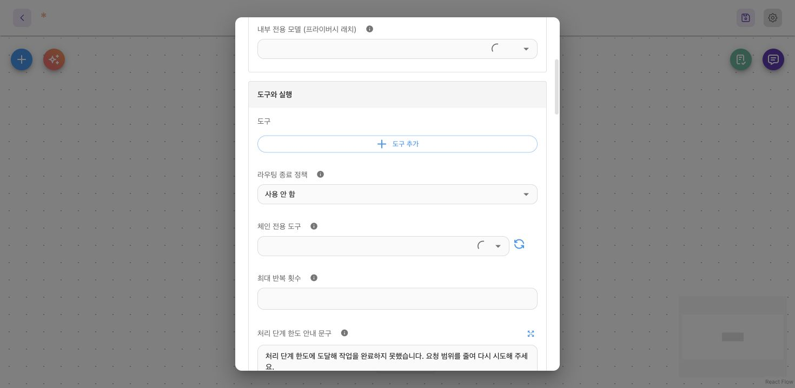

업무 도구는 일반 결과와 함께 genosChain 선언을 반환합니다. 서버는 모델에 전달할 결과에서 선언을 제거한 뒤 그 지시대로 실행합니다. 사람의 응답을 기다리는 카드나 네이티브 브릿지에서 일시 중단할 수 있으며, 응답을 받으면 서버 체크포인트에서 재개합니다. genos-chain은 기능 이름이고 genosChain은 JSON 키입니다. 이전 키인 genos_chain도 읽습니다.
설정 화면
모니모 Agent → 설정 → 도구와 실행에서 업무 도구를 연결합니다. 모델의 직접 호출을 막아야 하는 도구만 체인 전용 도구에서 고르세요.

확인할 항목: 도구 추가와 체인 전용 도구가 같은 도구와 실행 영역에 있습니다. 체인 전용 목록은 이 노드에 연결된 도구에서 선택합니다. 이 제한은 다른 노드에 상속되지 않습니다.
체인의 JSON은 이 설정창에 붙여 넣는 것이 아니라 업무 도구의 반환값에 넣습니다. 체인 전용 설정은 직접 호출을 제한하는 옵션이고, genosChain 선언은 다음 실행을 지시하는 데이터입니다.
데모로 선택과 승인 확인하기
승인, 거절, 알 수 없는 선택 ID를 순서대로 확인해 보세요. 제출한 ID가 원본 행과 연결되고 다음 도구의 인자가 되는 과정을 볼 수 있습니다. 이 단계 사이에서 모델이 다음 도구를 고르지는 않습니다.
합성 동작 데모 · 실제 도구 호출 없음 · 크게 열기
첫 체인 만들기
이 예제의 lookup_accounts는 후보 두 개를 반환하고 사용자에게 하나를 고르게 합니다. 선택한 ID를 원본 행과 연결한 뒤 use_account에 원래의 계좌 필드를 전달합니다.
{
"success": true,
"payload": {
"accounts": [
{"id": "a1", "label": "생활 계좌", "account": "DEMO-A"},
{"id": "a2", "label": "저축 계좌", "account": "DEMO-B"}
],
"genosChain": {
"require": {
"type": "hitl",
"component": "single-select",
"prompt": "계좌를 선택하세요",
"optionsFrom": {
"array": "$output.payload.accounts",
"value": "id",
"label": "label"
}
},
"onSuccess": {
"tool": "use_account",
"argsFrom": {"account": "$selected.account"}
},
"onFailure": {"stop": true, "message": "계좌 선택을 취소했습니다."}
}
}
}
이 에이전트에 use_account 도구가 연결되어 있어야 합니다. 예제에서는 allowCustomInput을 설정하지 않았으므로, 알 수 없는 ID를 선택해 임의의 원본 행을 만들어 전달할 수 없습니다.
여러 관문을 순서대로 통과하기
순차 관문은 steps로 선언합니다. 각 관문에는 비어 있지 않은 고유 id와 require 객체가 필요합니다. 모든 관문을 통과하면 바깥쪽 onSuccess가 실행됩니다. 관문별 onFailure를 설정하면 바깥쪽 실패 분기보다 우선합니다.
{
"steps": [
{
"id": "pick",
"require": {
"type": "hitl",
"component": "single-select",
"prompt": "계좌를 선택하세요",
"optionsFrom": {"array": "$output.payload.accounts", "value": "id", "label": "label"}
}
},
{
"id": "approve",
"require": {
"type": "hitl",
"component": "confirm",
"prompt": "{{ $steps.pick.selected.label }}를 사용할까요?"
}
}
],
"onSuccess": {"tool": "use_account", "argsFrom": {"account": "$steps.pick.selected.account"}},
"onFailure": {"stop": true, "message": "취소했습니다."}
}
이 선언을 도구 결과의 genosChain 아래에 넣으세요. steps가 있으면 v2 순차 실행 방식으로 처리합니다. confirm은 진행·거절을 결정하는 boolean 확인입니다. 임의의 항목을 고르게 하려면 선택 카드를 사용하세요. 브릿지 관문은 type: "bridge", service, option 객체를 사용하며, 결과는 $bridge.result 또는 $steps.<id>.bridge.result로 참조합니다.
기술 사양과 주의사항
참조 규칙
| 참조 | 의미 |
|---|---|
$output |
체인 선언을 제거한 도구 결과. payload 구조는 유지됨 |
$answer.selected[0] |
첫 번째 제출 선택값. 표시 라벨이 아님 |
$selected |
single-select는 연결된 원본 행, multi-select는 선택 순서대로 연결된 원본 행 배열 |
$answer.customInput |
direct-input으로 받은 텍스트. direct-input에는 $selected가 없음 |
$bridge |
현재 브릿지 응답 |
$items |
관문에 제공한 서버 측 원본 항목 |
$steps.pick.selected |
이전 pick 관문에서 선택한 원본 행 |
argsFrom과 optionsFrom에는 $output.payload.accounts처럼 경로만 씁니다. 프롬프트와 종료 문구에는 {{ $path }}를 사용합니다. JavaScript 표현식이 아니라 속성·인덱스 조회입니다. 프롬프트에 $steps.pick.selected.label만 쓰면 문자 그대로 표시됩니다. 표시 템플릿에는 단일 값을 가리키는 필드가 필요하며, 객체 전체·null·없는 경로를 참조하면 작성 오류가 됩니다.
배포 전에 알아둘 동작
-
구조 키는 camelCase와 snake_case를 모두 읽습니다. 두 표기를 함께 쓰면 snake_case 키가 우선합니다. 한 가지 표기로 통일하세요.
-
argsFrom경로에 값이 없으면 로그를 남기고 해당 인자를 생략합니다. 반면 프롬프트 참조가 없으면 실행을 중단합니다. 현재 두 처리 경계의 동작이 다릅니다. -
체인 선언이 없거나
null,{}이면 체인 없이 처리합니다. 선택적require와 분기 필드는 null일 수 있지만, v2 관문의require는 null일 수 없습니다. -
도구가 또 다른 체인을 반환할 수 있습니다. 다음 도구 호출은 일시 중단·재개를 포함해 최대 20단계이며, 관문을 통과해도 카운트가 초기화되지 않습니다.
-
공식 MCP 스키마에 객체 속성
qvo하나만 있고 스키마 조합 대안이 없으면 체인 호출은 인자를 자동으로qvo안에 넣습니다. 슬롯 입구도구의 인자 구성은 별도 규칙을 따릅니다. -
유효하지 않은 실행 선언은 복구 가능한
GENOS_CHAIN_INVALID피드백을 반환하고 다음 도구를 실행하지 않습니다. 일부 표시 구성 오류는 여전히 실행을 종료합니다. 이미 완료된 결과와 실행되지 않은 단계를 구분하고, 뒤 단계의 오류를 고치기 위해 완료된 업무 호출을 다시 실행하지 마세요. -
승인은 다음 단계로 진행할 허가이지 업무 완료의 증거가 아닙니다. 최종 성공 판정은 마지막 도구의 명시적
COMPLETED상태와 실패 여부를 확인합니다. 중간 도구가 완료되어도 남은 체인이 있으면 최종 완료가 아닙니다.
체인 파서와 실행기 · 선택과 재개 처리 · MCP 체인 호출.
선언 필드 전체 보기
| 위치 | 필드 | 규칙 |
|---|---|---|
| 루트 | require |
단일 HITL 또는 bridge 관문 |
| 루트 | onSuccess, onFailure |
후속 도구 호출 또는 중단 분기 |
| 루트 | steps |
순서가 있는 관문 배열. 존재하면 v2 방식 |
steps[] |
id |
비어 있지 않은 고유 문자열 |
steps[] |
require |
필수 관문 객체. null 불가 |
steps[] |
onFailure |
이 관문에만 적용. 바깥 실패 분기보다 우선 |
| 실행 분기 | tool |
연결된 실제 도구 이름 |
| 실행 분기 | argsFrom |
경로 또는 작성한 JSON 구조로 인자 구성 |
| 실행 분기 | stop |
true이면 종료를 선언. tool과 함께 작성하지 않음 |
| 실행 분기 | message |
stop:true일 때만 비어 있지 않은 문자열 |
| 관문·실행 분기 | timeout |
양의 유한 숫자, 초 단위. 문자열·null·0 불가 |
genosChain과 이전 genos_chain을 읽습니다. 구조 키는 camelCase·snake_case 별칭을 읽으며 둘 다 있으면 snake_case 값이 우선합니다. 사용자 데이터의 키까지 바꾸지는 않습니다.
HITL 관문과 선택 행 연결
require.type은 hitl, component는 confirm, single-select, multi-select, direct-input을 사용합니다. 선택 목록은 optionsFrom의 array·value·label로 원본 배열에 연결할 수 있습니다. 필요하면 원본 items를 별도로 두어 화면에 보내는 값과 서버가 이어받는 값을 구분합니다. allowCustomInput은 single-select의 목록 외 텍스트 입력에만 사용하며 multi-select의 직접 입력은 지원하지 않습니다.
single-select의 $selected는 원본 행 하나, multi-select는 선택 순서의 원본 행 배열입니다. 응답의 표시 라벨로 행을 찾아 실행하지 않습니다. 알 수 없는 ID를 원본 객체처럼 받아들여서는 안 됩니다. direct-input에는 원본 행이 없으므로 $answer.customInput을 사용합니다. direct-input을 가리키는 $selected·$steps.<id>.selected는 선언 오류입니다.
브릿지 관문
type: "bridge"에 service, 필요한 command·option과 timeout을 지정합니다. 결과를 기다리는 계약에는 await: true를 사용합니다. 결과는 $bridge.result 또는 $steps.<id>.bridge.result로 참조합니다. 브릿지 실행은 사용자 기기에서 수행하므로 서버가 네이티브 작업을 대신 완료했다고 판단하지 마세요.
시간 제한과 중단
각 관문의 제한 시간은 그 관문이 활성화될 때 시작합니다. 절대 만료 시각을 체크포인트에 저장하므로 화면을 새로 고쳐도 다시 시작되지 않습니다. 만료된 응답은 GENOS_INTERACTION_TIMEOUT으로 거절하며 승인·거절 어느 분기도 실행하지 않습니다. 다음 요청을 새로 시작해야 합니다.
도구 분기의 timeout은 해당 호출의 로컬 대기를 끝내고 취소 신호를 보냅니다. 원격 서비스가 취소를 무시하면 실제 작업은 끝날 수도 있으므로 결과는 미확정입니다. 늦은 응답을 다음 체인으로 이어 붙이거나 부작용이 있는 작업을 자동 재시도하지 않습니다.
한 번의 체인은 후속 도구 호출 최대 20단계입니다. 관문 통과나 HITL 재개가 깊이를 초기화하지 않습니다. 서버가 만료를 확인하는 시점은 재개 요청이며, timeout 자체가 백그라운드 실행·자동 UI 닫기·기기 작업 취소를 추가하지는 않습니다.
작성 금지 조합과 현재 구현 차이
{ "tool": "next", "stop": true }는 작성하지 않습니다. 의도는 들어오면 즉시 중단하는 것이지만 현재 파서·실행 경로가 이 조합을 일관되게 강제하지 않습니다. 도구를 부르는 분기와 종료 분기를 분리하세요. 이 사이트는 런타임을 수정하지 않습니다.
근거: toolChain.ts · step-call-timeouts.md · chain-step-references.md.